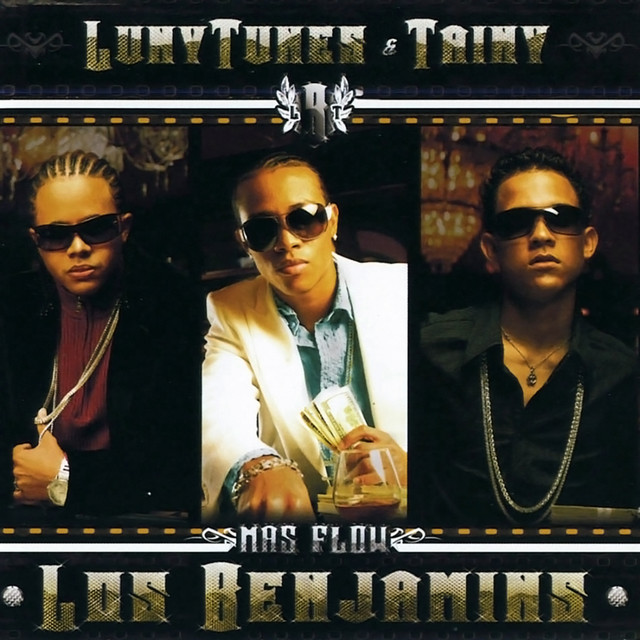
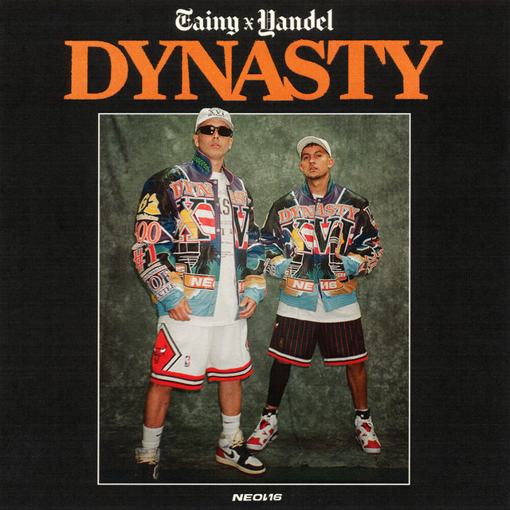

Mas Flow: Los Benjamins (2006)
 Más Flow: Los Benjamins es el título de la tercera compilación discográfica de los productores dominicanos Luny Tunes bajo el nombre de Más Flow, y que en esta ocasión cuentan con la colaboración del productor Tainy.
Para esta producción, Más Flow Inc. cuenta de nuevo con cantantes estelares, en especial Wisin & Yandel, Héctor el Father, Daddy Yankee y Tony Tun-Tun quienes se habían encargado de llevar al éxito la canción «Mayor que yo» en el compilado antecesor, y en esta ocasión se encargarían de darle fama a la canción «Noche de entierro (Nuestro amor)», considerada como la continuación de la historia de Mayor que yo.
Tracklist:
- Royal Rumble (Se Van) (Wisin, Wise da' Gangsta, Zion, Daddy Yankee, Hector el Father, Yomo, Don Omar, Franco El Gorila, Arcángel, Alexis, El Roocki)
- Lento (RBD)
- Hello (Zion)
- Entrégate (Wisin & Yandel)
- Beautiful (Don Omar)
- Noche de Entierro (Daddy Yankee, Wisin & Yandel, Zion, Héctor el Father, Tony Tun-Tun)
- Mi Fanática (Arcángel & De La Ghetto)
- Esta Noche» (Tito el Bambino)
- La Ex (Alexis & Fido)
- De Ti Me Enamore (Baby Rasta)
- Slow Motion (Yo-Seph)
- Alócate (Zion)
- Tocarte (Plan B)
- Disimúlalo (Magnate)
- Acelera (Franco El Gorila)
- Clack Clack (Angel Doze)
- Piden Reggaeton (Ángel & Khriz)
- Deja Quitarte La Ropa (Dálmata)
- Contigo (Jean)
- Tu Me Arrebata (Ñejo)
- No Te Quiere (El Roockie)
Escuchar en Spotify:
DYNASTY (2021)
 Dynasty (estilizado en mayúsculas) es un álbum de estudio colaborativo entre el productor Tainy y el cantante Yandel. Fue publicado el 15 de julio de 2021 bajo Y Entertainment y Neon16.
El álbum presenta nueve canciones, en su mayoría con ritmos de reguetón y están incluidas las participaciones de Rauw Alejandro y el rapero Saint JHN. Así mismo, es el primer álbum colaborativo entre Tainy y Yandel, ambos como solistas, ya que antes trabajaron juntos en diversas ocasiones a lo largo de 16 años.
Tracklist:
- Intro
- Una más (ft. Rauw Alejandro)
- Cámara lenta
- Deja vú
- El plan
- Háblame claro
- Si te vas (ft. SAINt JHN)
- Buscando calor
- Va y ven
Escuchar en Spotify:
DATA (2023)

Data (estilizado en mayúsculas) es el primer álbum de estudio en solitario, y el segundo en su carrera musical, del productor discográfico y compositor puertorriqueño Tainy, incluyendo su previa colaboración en el álbum Dynasty con Yandel (2021). El álbum fue lanzado el 29 de junio de 2023 bajo el sello discográfico propio de Tainy, Neon16.
Este álbum está compuesto por 20 temas, cada uno de ellos presentando la colaboración de un cantante o músico distinto. Destacan apariciones de artistas como Myke Towers, Arcángel, Jhayco, Arca, Wisin & Yandel, Bad Bunny, E*Vax, Sech, Kany García, Young Miko, The Marías, Mora, Zion, J Balvin, Jowell & Randy, Daddy Yankee, Feid, Skrillex, Four Tet, Rauw Alejandro, Julieta Venegas, Alvaro Diaz y Chencho Corleone. La producción principal corrió a cargo del mismo Tainy, aunque también se otorgaron créditos de producción a asociados como su hermano Mvsis, Misael de la Cruz y Tuiste.
Tracklist:
- Obstáculo (junto a Myke Towers)
- PASIEMPRE (junto a Arcángel, Jhayco, Myke Towers, Omar Courtz y Arca)
- Todavía (junto a Wisin & Yandel)
- FANTASMA | AVC (junto a Jhayco)
- MOJABI GHOST (junto a Bad Bunny)
- 11 Y ONCE (junto a Sech y E.VAX)
- desde las 10 (KANY'S INTERLUDE) (junto a Kany García)
- mañana (junto a Young Miko y The Marías)
- BUENOS AIRES (junto a Mora y Zion)
- COLMILLO (junto a J Balvin y Young Miko con Jowell & Randy)
- LA BABY (junto a Daddy Yankee y Feid con Sech)
- me jodí... (junto a Arcángel)
- VOLVER (junto a Rauw Alejandro y Skrillex con Four Tet)
- EN VISTO (junto a Ozuna)
- Lo Siento BB:/ (junto a Bad Bunny y Julieta Venegas)
- si preguntas por mí (junto a Kris Floyd y Judeline)
- Sci-Fi (junto a Rauw Alejandro)
- CORLEONE INTERLUDE (junto a Chencho Corleone)
- PARANORMAL (junto a Álvaro Díaz)
- SACRIFICIO (junto a Xantos)